ここではメニューバーの各項目について説明します。メニューバーはサムネイルウィンドウとイメージウィンドウの両方に存在しますが、ここでは一緒に扱います。なお、片方のウィンドウにしかない項目には、「サムネイルウィンドウのみ」「イメージウィンドウのみ」と表記しています。項目名の後の [ ] 内は、既定のショートカットキーです。
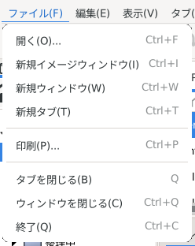
サムネイルウィンドウの [ファイル] メニュー
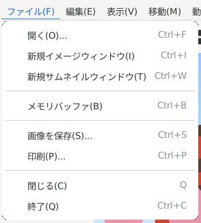
イメージウィンドウの [ファイル] メニュー
ファイルオープンダイアログを表示します。
「選択したファイルを開く」と、イメージウィンドウを新規に作成し、画像を展開します。
「選択したファイルのサムネイル」とすると、コレクションタブが新規に生成され、そこにコレクション(サムネイル表示)されます。選択したフォルダ (ディレクトリ) は、フォルダごとに新しいタブで開きます (ディレクトリビューでダブルクリックした時と同じです)。ファイルとフォルダを一緒に選んだ場合は、ファイルはコレクションタブに、フォルダはそれぞれのタブに表示されます。
空のイメージウィンドウを新規に作成します。
サムネイルウィンドウのみ。サムネイルウィンドウを新規に作成します。
イメージウィンドウのみ。サムネイルウィンドウを新規に作成します。
サムネイルウィンドウのみ。空のタブを新規に生成します。
イメージウィンドウのみ。展開している画像をメモリバッファに保持します。メモリバッファについての詳しい説明は、Tips の「イメージビューの描画を速くする」を参照してください。
イメージウィンドウのみ。表示している画像を、形式を指定して別のファイルに保存します (HEIC を JPEG にする、など)。サムネイルウィンドウのプレビューのマウスメニューの「画像を保存」も同じです。
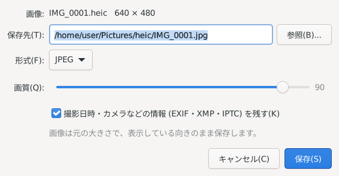
画像を保存のダイアログ
保存先: 初めは元の画像と同じフォルダ・同じ名前で、形式の拡張子にしたものです (元の画像と同じになる場合は名前に「_2」を付けます)。「参照...」でファイル選択のダイアログから選べます。同じ名前のファイルがあれば、上書きするか確認します。
形式: JPEG・PNG・WebP・AVIF・TIFF・BMP・PNM のうち、保存できるものが出ます (WebP・AVIF などは gdk-pixbuf の書き出し機能があるとき)。
画質: JPEG・WebP・AVIF の画質 (1〜100、初期値 90) です。
撮影日時・カメラなどの情報 (EXIF・XMP・IPTC) を残す: gexiv2 (Exiv2) を使って作成した場合の項目です。元のファイルの情報を新しいファイルにコピーします (JPEG・PNG・WebP・TIFF)。画像は表示している向きで保存するので、情報の「向き」は標準にし、EXIF の縮小画像は除きます。
画像は元の大きさで、表示している向き (回転・左右反転) のまま保存します。保存は別スレッドで行います。保存したフォルダをサムネイルウィンドウで開いていれば、一覧を更新します。選んだ形式と画質は、gimv を終了するまで覚えています。
サムネイルウィンドウでは、サムネイルビューで選択されている画像を印刷します。1 枚の画像を 1 ページに印刷します。画像が選択されておらず、プレビューに画像が表示されている場合は、その画像を印刷します。
イメージウィンドウでは、表示している画像を回転した向きで印刷します。
サムネイルウィンドウのみ。アクティブになっているタブを閉じます。
サムネイルウィンドウの「ウィンドウを閉じる」は、サムネイルウィンドウを閉じます。この時、展開されているイメージウィンドウはそのまま残ります。イメージウィンドウの「閉じる」は、そのイメージウィンドウを閉じます。
GImageView に関する、全てのウィンドウを閉じます。
サムネイルウィンドウ・イメージウィンドウが複数ある場合、それらは全て閉じられます。
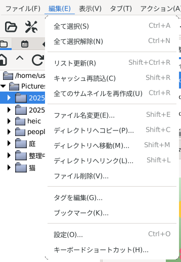
サムネイルウィンドウの [編集] メニュー (画像を 1 つ選択した状態)
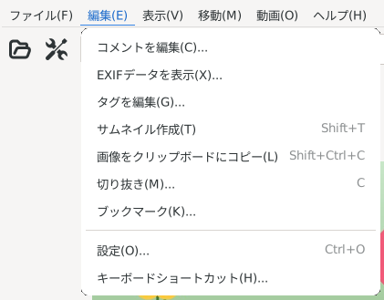
イメージウィンドウの [編集] メニュー
サムネイルウィンドウのみ。アクティブになっているタブ内のファイルを「全て選択」します。
サムネイルウィンドウのみ。アクティブになっているタブの「選択解除」を行います。
GImageView は、タブごとに選択(非選択)状態を保持しています。「全て選択解除」を行っても、アクティブになっていないタブについては、選択解除を行いません。
サムネイルウィンドウのみ。アクティブになっているタブの「リスト更新」を行います。
サムネイルウィンドウのみ。アクティブになっているタブの「キャッシュを再読込」を行います。
サムネイルウィンドウのみ。アクティブになっているタブの「サムネイルを再作成」を行います。表示している部分から作り直し、残りは裏で作り直します。作り直している間は進み具合 (n/N) が表示され、ツールバーのストップボタンで止められます。表示位置はそのままです。
「リスト更新」「キャッシュを再読込」「サムネイルを再作成」の違いについては、Tips の「[リスト更新]・[キャッシュ再読込]・[全てのサムネイルを再作成]の違いについて」を参照してください。
サムネイルウィンドウのみ。サムネイルビューで選択されている画像(ファイル)の名前を変更します。
変更するのは拡張子を除いた名前で、拡張子 (.jpg など) はそのまま残ります (拡張子がなくなると画像として表示されなくなるため)。拡張子も変えたい時は「拡張子も変更する」をチェックすると、全体を編集できます。その時、新しい名前に画像の拡張子がなければ確認し、もう一度 [拡張子なしで変更] を押すとそのまま変更します。
なお、画像(ファイル)が複数選択されている場合には、実行できません。
サムネイルウィンドウのみ。選択されている画像(ファイル)を他のディレクトリにコピーします。
なお、対象ディレクトリを選択するダイアログでは、タブ補完が可能です。
サムネイルウィンドウのみ。選択されている画像(ファイル)を他のディレクトリに移動します。
なお、対象ディレクトリを選択するダイアログでは、タブ補完が可能です。
サムネイルウィンドウのみ。選択されている画像(ファイル)に対するシンボリックリンクを張ります。シンボリックリンクを作りたいディレクトリを指定してください。
サムネイルウィンドウのみ。選択されている画像(ファイル)を削除します。
やり直しはききません。確認ダイアログに対する答えは、十分注意してください。
イメージウィンドウのみ。表示している画像のコメント (題名・日付などのデータとノート。画像ファイルとは別のコメントファイルに保存します。2.4) を編集します。
イメージウィンドウのみ。表示している画像の EXIF データを表示します。gexiv2 (Exiv2) を使って作成した場合は JPEG 以外の EXIF も表示します。
イメージウィンドウのみ。表示している画像のサムネイルを、[設定 | サムネイルキャッシュ] の「キャッシュ書込タイプ」の形式で作成します。
イメージウィンドウのみ。表示している画像の一部を切り抜いて、別のファイルとして保存します。元の画像は変わりません。イメージビューとプレビューのマウスメニューの「切り抜き」も同じです。
画像の上に切り抜く範囲の枠 (初めは画像全体) と、画像の上にバーが出ます。枠の外は暗く表示します。
枠の中をドラッグすると枠が動き、辺や角 (白い四角) をドラッグすると大きさが変わります。枠の外 (枠が画像全体の時は中も) をドラッグすると新しい枠を描きます。画像の外のドラッグはこれまでどおりスクロールです。
端を検出: まわり (画像の端) と同じ色の縁を除いた範囲を枠にします。A4 で読み取った小さな物や黒い布の上で撮った物のように、まわりが一色 (白や黒など) の画像に使います。スキャナの端の影やゴミは無視し、少し余白を残します。結果は枠として出るので、手で直してから保存できます。
設定 (≡): 端の色との差の許容 (初期値 40。ノイズが多ければ大きく、物の色が薄ければ小さく)、余白 (px、初期値 8)、画質 (JPEG・WebP、初期値 90)、ファイルの情報 (EXIF など) を残すか、コメントと手動で付けたタグを引き継ぐかです。
縦横比: 自由・元の画像と同じ・1:1・4:3・3:2・16:9。縦長か横長かは枠に合わせます。
枠の大きさを元の画像のピクセル数で表示します。
保存 [Enter]: 元の画像と同じフォルダに「名前_crop.jpg」(形式は元のまま。gdk-pixbuf が書けない形式は JPEG、透過があれば PNG) で保存します。同じ名前があれば -1, -2 などを付けて、上書きはしません。保存すると下に「表示」のボタンが出て、サムネイルウィンドウで新しい画像を選べます。
やめる [Esc]: 切り抜きをやめます。別の画像に移ったり、回転したりしてもやめます。
画像は元の大きさで、表示している向き (回転・左右反転) のまま切り抜きます。読み込み・端の検出・保存は別スレッドで行います。
画像の索引が使える場合にある項目です。選択している画像 (イメージウィンドウでは表示している画像) のタグを編集します (2.6)。標準ではキーはありません。
選択している画像 (イメージウィンドウでは表示している画像) をブックマークし、メモの欄を出します (2.5)。標準ではキーはありません。
設定ダイアログを表示します。
設定内容の詳細は、項7を参照してください。
サムネイルウィンドウ (プレビューも) と画像ウィンドウのメニュー項目のキーと、その他のキー (右ボタンメニュー、パスの補完、ナビゲーター、サムネイルウィンドウの表示形式) を一覧し、変更します。行のキーをクリックして新しいキーを押してください。Esc でそのまま、BackSpace でキーなしになります。同じウィンドウの別の項目のキーだったときは、そちらから外すか確認します。行の戻すボタンか「すべて標準に戻す...」で標準のキーに戻ります。変えたキーはすぐに使え (表示形式のキーは次回の起動から)、~/.gimv/keyaccelrc か ~/.gimv/keyconf に保存されます。上の入力欄で名前やキーの一部 (「ctrl+t」) で絞り込めます。
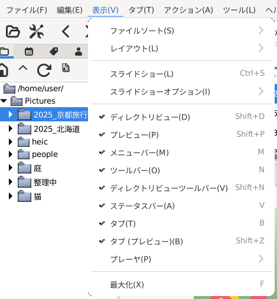
サムネイルウィンドウの [表示] メニュー
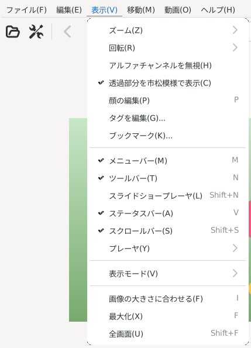
イメージウィンドウの [表示] メニュー
サムネイルウィンドウのみ。サムネイルビューを指定した順でソートします。
ここでの指定は、アクティブになっているタブと指定した後に開く全てのタブに対して有効です。
GImageView は、選択(非選択)状態と同様に、タブごとに並び順を保持していますので、開いていないタブについては、それまでのソート順が維持されます。なお、指定できる順は以下のとおりです。
名前
参照日時
更新日時
撮影日 (画像の索引の撮影日: コメントの「日付」、EXIF、ファイル名の日付、更新日時の順。索引の外の画像は更新日時。新しい順にするには「逆順」も指定します)
状態変更日時
サイズ
種類
画像幅
画像高さ
画像面積
このほか、「逆順」「大文字小文字を区別しない」「ディレクトリを区別しない」を指定できます。
サムネイルウィンドウのみ。サムネイルウィンドウの各ビュー(ディレクトリ・サムネイル・プレビュー)のレイアウトを変更します。レイアウト0〜4 (Ctrl + 0〜4)、カスタムから選択する事ができます。なお、カスタムレイアウトについての詳細は、Tips の「カスタムレイアウトについて」を参照してください。
GTK 4 版では、各レイアウトは配置を表す絵のボタンで並べて表示されます。絵の文字は、D がディレクトリビュー、T がサムネイルビュー、P がプレビューを表します。ボタンにマウスを乗せると、名前とショートカットキー (Ctrl + 0〜4) が表示されます。カスタムの絵は、その時点のカスタムレイアウトを表します。
サムネイルウィンドウのみ。サムネイルウィンドウ内の各ビュー(ディレクトリ・サムネイル・プレビュー)の配置を、あらかじめ用意されている構成から選択します。
GTK 4 版では、各構成は配置を表す絵のボタンで並べて表示されます。ボタンにマウスを乗せると名前が表示されます。
サムネイルウィンドウのみ。アクティブになっているタブについて、スライドショーを行います。
スライドショーについての設定は、項7.5で行ってください。
サムネイルウィンドウのみ。スライドショーの順序と対象を指定します。
最初から開始 / 選択画像から開始 / ランダム順 : 表示する順序です。
選択画像のみ : 選択されている画像だけを表示します。
画像と動画 / 画像のみ / 動画のみ : 表示するファイルの種類です。
イメージウィンドウのみ。イメージビューのズーム(拡大縮小)、「アスペクト比の保持」設定などを行います。
拡大 [S]、縮小 [A]、ウィンドウの大きさに合わせる [W]、幅を合わせる [Shift + W]、高さを合わせる [Shift + H]、アスペクト比を保持 [Shift + A] と、10〜200% [1〜9] があります。これ以外の倍率については、ツールバーから直接指定してください。
「アスペクト比を保持」にチェックが入っている場合、イメージビューの拡大縮小を行った時に、アスペクト比が保持されます。
イメージウィンドウのみ。表示している画像を回転します (画像ファイルは書き換えません)。時計回りに90°回転 [R]、反時計回りに90°回転 [E]、180度回転 [D] の3種類です。
イメージウィンドウのみ。画像の透過情報を使わずに表示します。
イメージウィンドウのみ。透過のある画像の背景を、灰色の市松模様で表示します。初期状態は [設定 | イメージウィンドウ] の画像の透過部分を市松模様で表示するに従います。
サムネイルウィンドウのみ。ディレクトリビュー表示 ON/OFF です。
サムネイルウィンドウのみ。プレビューの ON/OFF です。
メニューバー表示 ON/OFF です。
ツールバー表示 ON/OFF です。
サムネイルウィンドウのみ。ディレクトリビューの、ツールバー表示 ON/OFF です。
イメージウィンドウのみ。スライドショー操作用のツールバー表示 ON/OFF です。
ステータスバー表示 ON/OFF です。
イメージウィンドウのみ。スクロールバー表示 ON/OFF です。
サムネイルウィンドウのみ。サムネイルビューのタブ表示 ON/OFF です。
サムネイルウィンドウのみ。プレビューのタブ表示 ON/OFF です。
動画・音声の再生用ツールバーの表示を、「表示」「非表示」「自動」から選びます。「自動」では動画・音声を表示している時だけ表示します。
イメージウィンドウのみ。表示に使う方式 (画像表示、動画・音声のプラグイン) を切り替えます。
イメージウィンドウのみ。イメージウィンドウをイメージビューの大きさ(表示されている画像のサイズ)にリサイズします。ツールバーの[ウィンドウの大きさを画像に合わせる]と同じです。
イメージビューの倍率(表示されている画像のサイズ)は変更されません。リサイズされるのはイメージウィンドウの方です。
ウィンドウの最大化 ON/OFF です。
イメージウィンドウのみ。全画面表示 ON/OFF です。
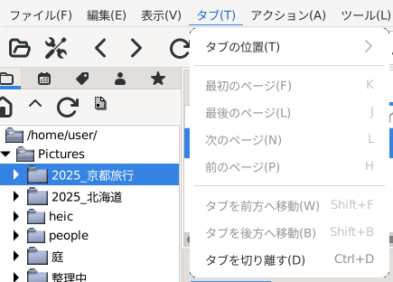
サムネイルウィンドウの [タブ] メニュー (タブが 1 つの状態)
サムネイルウィンドウのみのメニューです。
タブの表示位置を変更します。上・下・左・右の4つがあります。
最初のタブ(左端)をアクティブにします。
最後のタブ(右端)をアクティブにします。
次のタブ(1つ右)をアクティブにします。
前のタブ(1つ左)をアクティブにします。
アクティブになっているタブを、前に(1つ左)にずらします。
アクティブになっているタブを、後ろ(1つ右)にずらします。
アクティブになっているタブを切り離し、新規にサムネイルウィンドウを生成します。
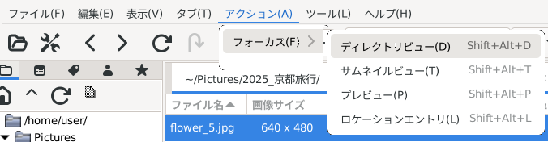
サムネイルウィンドウの [アクション | フォーカス] メニュー
サムネイルウィンドウのみのメニューです。
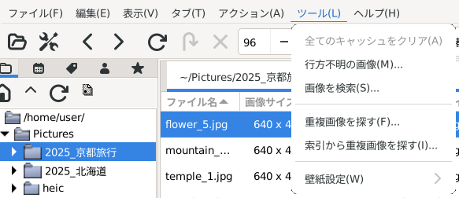
サムネイルウィンドウの [ツール] メニュー
サムネイルウィンドウのみのメニューです。
[設定 | サムネイルキャッシュ] の「キャッシュ書込タイプ」の形式のサムネイルキャッシュを、全て削除します。
コメント (タグ) の付いた画像のうち、見つからなくなったものの一覧を開きます。コメントを移動先や別の画像に付け直したり、削除したりできます (2.6)。画像の索引が使える場合だけのメニューです。
索引から、タグ・人物・撮影日の期間を組み合わせて画像を探すウィンドウを開きます (2.8)。画像の索引が使える場合だけのメニューです。
アクティブなタブの全ての画像から重複している画像を探し、結果のウィンドウを開きます (ファイルの選択は関係ありません)。1 回で次の 3 種類に分けて探します。
完全に同じ: 中身がまったく同じファイル。
大きさ違い: 同じ写真で大きさ (画素数) だけが違うもの。縦横比が同じで、同じ大きさのものがないとき。同じファイルも含みます。
似ている: それ以外の似ている画像 (編集したもの・保存し直したもの・別に撮ったもの)。どの程度似ていれば見つけるかは [設定 | 検索] の「精度」です。
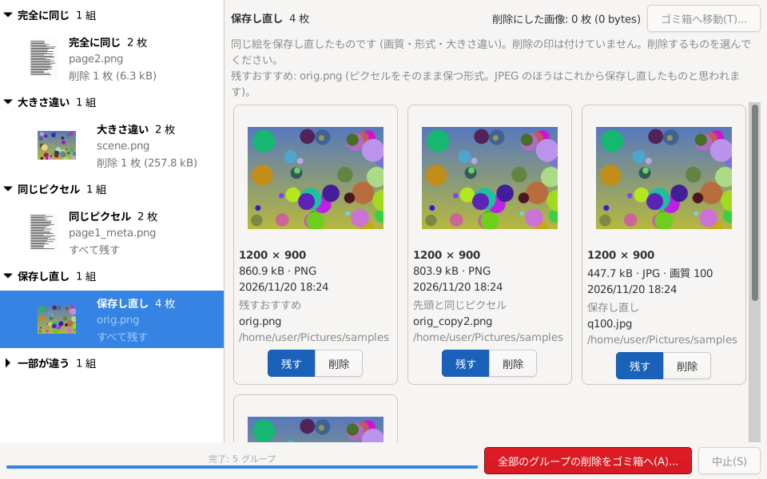
重複画像の結果のウィンドウ
左はグループの一覧です。種類・枚数と、削除にしている枚数・容量が出ます。グループを選ぶと、右にその画像が並び、大きさ・容量・形式・撮影日・先頭との一致度・場所・コメントの有無を比べられます。画像をクリックするとサムネイルウィンドウで表示します (動きは [設定 | 検索] で指定)。
それぞれの画像の「残す」「削除」で選びます。「完全に同じ」「大きさ違い」のグループは、画素数が大きいもの (同じなら容量が大きいもの・古いもの) を「残す」に、他を「削除」にしてあります。「似ている」のグループは全て「残す」です。右上の「ゴミ箱へ移動...」は、表示しているグループで削除にした画像だけを、確認のあとゴミ箱へ移動します (ゴミ箱から元に戻せます)。慎重に確かめられるよう、ゴミ箱へ移すのは 1 グループずつです。確認にはファイル名が出て、グループの全てを削除にしているときやコメントのある画像があるときはそう表示します (全てを削除にしているときは「キャンセル」が既定)。移動のあとは次のグループを表示します。グループが 2 つ以上あるときは、下の「全部のグループの削除をゴミ箱へ...」で、全部のグループで削除にした画像をまとめて移動できます (全てを削除にしているグループは含めません)。
移動の前に、削除する画像がもう一度、残す画像と同じかを比べます (「完全に同じ」のグループ)。調べたあとに変わったファイルは移動しません。削除する画像にコメント (タグ) かブックマークがあるときは、確認で「残す画像に移してゴミ箱へ移動」を選べます。残す画像にコメントがなければコメントごと移し、あればタグだけを加えます (タグだけのコメントは消します)。ブックマークは残す画像になければ移します。「移さずにゴミ箱へ移動」では、コメントファイルはそのまま残ります。
ファイル名に意味があって残したいときは「ゴミ箱へ移してリンクを残す」です (「完全に同じ」のグループだけ)。ファイルはゴミ箱へ移り、同じ名前で残す画像へのリンクが置かれます。同じファイルシステムならハードリンク (容量を使わず、残す画像を移動しても切れません)、違えばシンボリックリンク (残す画像の絶対パス) です。コメント・タグ・ブックマークはその名前に付いたままです。リンクを作れないときは、ゴミ箱へも移しません。
画像はこのウィンドウが自分で読み込むので、サムネイルビューで読み込んでいない画像も表示します。探している間も操作でき、まず「完全に同じ」グループが出て、終わると全てのグループになります。アーカイブの中の画像は対象外です。探し方と分け方の詳細は「重複画像の探し方」を見て下さい。
索引の全部の画像から、中身がまったく同じファイル (「完全に同じ」) を探し、同じ結果のウィンドウで開きます。別のフォルダにある同じファイルも見つかります。索引が前もって調べておいた結果を使うので、画像を読まずにすぐ表示します。[設定 | 索引] の「同じファイルを探しておく」がオンのときに使えます。
索引は、ほかの画像と同じ大きさ (バイト数) の画像だけを、ほかの処理のあとで読みます。先頭の 64 KB を比べ、同じものだけファイル全体を比べます。同じ名前で同じ大きさの画像 (別のフォルダに保存し直したもの) を先に調べるので、その分はすぐに見つかります。画像が多いと初回は何時間もかかることがあり、その間はステータスバーに「索引: 同じファイル n%」と出ます。途中でも、見つかった分だけを表示します。同じファイルへのハードリンクは 1 つとして数えます。大きさ違いや似ている画像は探しません (タブの画像から「重複画像を探す」で探します)。
フォルダの下だけで探すときは、ディレクトリビューの右クリックの「下のフォルダも含めて重複画像を探す...」、ある画像と同じファイルを探すときは、サムネイルの右クリックの「同じファイルを探す」です。
選択している画像を、デスクトップの壁紙にします。「このデスクトップ」は、実行中のデスクトップ (環境変数 XDG_CURRENT_DESKTOP) に合うコマンドを使います。その下には、Xfce・GNOME・KDE Plasma などのデスクトップごとの項目があります。
JPEG・PNG 以外の画像やアーカイブ内の画像は、PNG に変換して ~/.gimv/wallpaper/ に置いたものを壁紙にします。項目とコマンドは ~/.gimv/gimvrc の wallpaper_menu で変更できます。
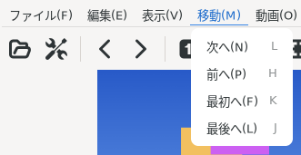
イメージウィンドウの [移動] メニュー
イメージウィンドウのみのメニューです。
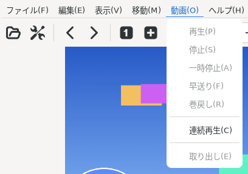
イメージウィンドウの [動画] メニュー (画像を表示している状態)
イメージウィンドウのみのメニューです。動画・音声を表示している時に使えます。
曲 (m4a・mp3・flac・ogg など) にアルバムアートが入っていれば、再生している間はそれを表示し、サムネイルにも使います (GStreamer プラグイン)。アルバムアートは元の大きさで表示し (表示する場所より大きい時だけ縮めます)、画像と同じズームの操作 (拡大・縮小・倍率・ウィンドウの大きさに合わせる) で大きさを変えられます。アルバムアートの無い曲は、これまでどおり黒い画面で、サムネイルはありません。
動画・音声の再生を操作します。
再生が終わると、次のファイルに移って再生します。初期状態は [設定 | 動画と音声] の連続再生に従います。
Xine プラグインで表示している時に使えます。停止中に、xine の入力プラグインを選び、そのプラグインが再生できるもの (MRL) の一覧を表示対象にします。
動画の下の操作バーの右端にあります (メニューにはありません)。スピーカーのボタンで音を消したり戻したりし、その右のスライダーで音量を変えます (ホイールでも変えられます)。音を消している時にスライダーを動かすと、音が戻ります。音量とミュートはすべてのウィンドウで共通で、終了しても覚えています。GStreamer と MPlayer のプラグインで使えます (MPlayer では mplayer 自身の音量で、サウンドカードの音量は変えません)。